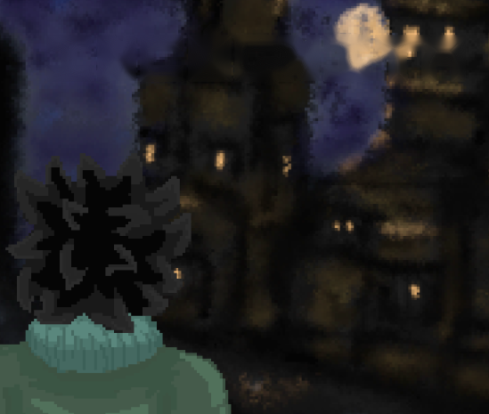
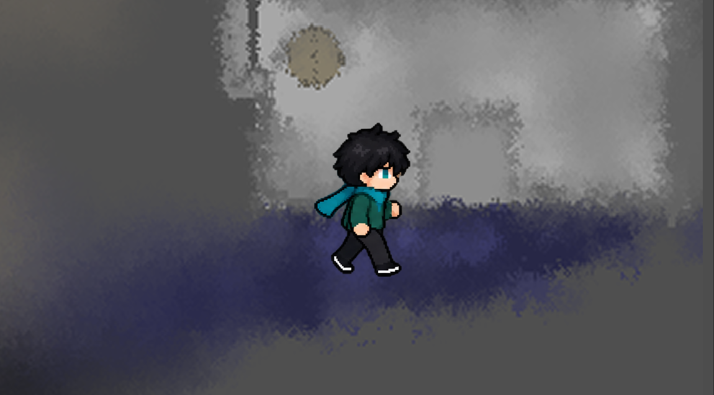
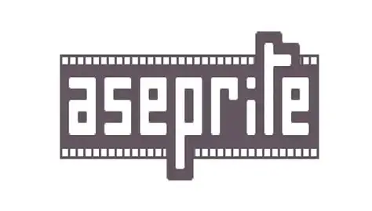
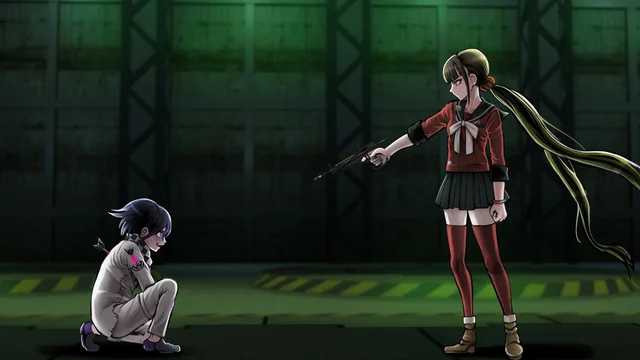
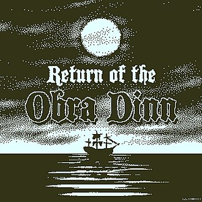
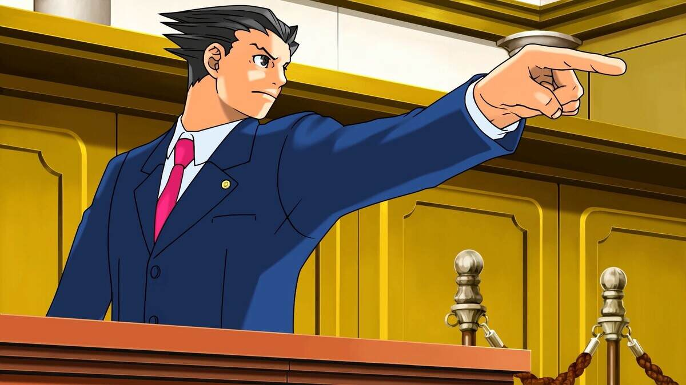
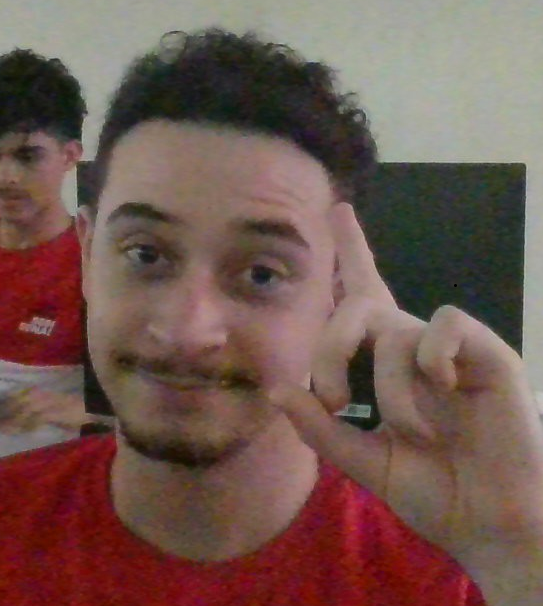

Capítulo IDemo
Capítulo 1
Demo: ...
Onde o silêncio esconde mistérios, e suas mãos revelam o caminho.
Investigação e quebra-cabeças em Libras no PC usando mouse e teclado.

...
...

Demo: ...

...
...

...
Dicionário de sinais com animações e aprendizado sem punição: errar nunca faz perder progresso.
[Escreva aqui o que a música faz no jogo]

Cutscenes com estilo anime e narrativa envolvente.

Observar, relacionar pistas e concluir a verdade por conta própria.

Visual Novel com mecânica de multi-escolha.
Incógnita é feito por uma equipe independente de quatro pessoas, unidas pela vontade de contar uma história em Libras.
Responsável pela documentação, programação e narrativa do jogo! Ajudou também na produção de arte e efeitos sonoros.
![Retrato de [Isaac]](assets/team/criador-2.webp)
Responsável pelo desenvolvimento da parte técnica do jogo e efeitos sonoros! Ele contribuiu com o design das mecânicas do jogo.
![Retrato de [Morgan]](assets/team/criador-3.webp)
Responsável pelo design, arte e efeitos sonoros do jogo, ajudou também na narrativa! Contribuiu com o desenvolvimento do site.

Responsável pelo design arquitetônico e análise de dados do jogo! Ele também contribuiu com o desenvolvimento do site.
O laboratório está em silêncio total. Procure pistas, resolva os enigmas, abra o cofre e libere o acesso à demo. Jogo 100% visual.
A demo de Incógnita é para quem investiga. Abra o cofre do laboratório para liberar o acesso.